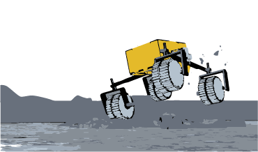

Fast Mobility

[Placeholder] A prototype rover, Explorer 1 (EX1), was built and tested at Tohoku University's Space Robotics Lab to validate a novel mechanically-hybrid suspension design under high-speed conditions.
Related Publications
- Enabling Faster Locomotion of Planetary Rovers with a Mechanically-Hybrid Suspension — IEEE RA-L, 2024
- High-speed mobility in planetary surfaces: a technical review — Journal of Field Robotics, 2019
- The effects of increasing velocity on the tractive performance of planetary rovers — ISTVS, 2019 (best paper award)